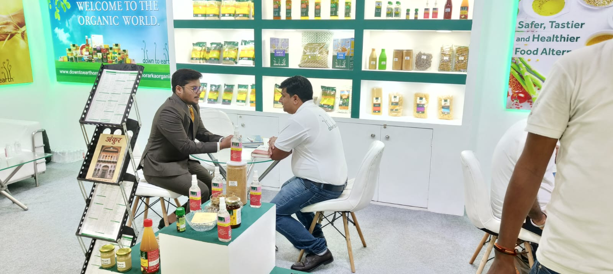

Firmly rooted in tradition
foodspert - Concept & Knowledge Sharing


Firmly rooted in tradition

At Morarka Organic Foods Limited (MOFL), the Foodspert™ concept is a knowledge-led movement that redefines our relationship with food. Food is not just consumption—it is nutrition, culture, heritage, health, and joy. In today’s fast-paced, instant-food culture, we have lost touch with traditional wisdom, mindful eating, and the true value of what we consume, leading to declining health and disappearing food heritage.
A Foodspert is an informed partner in the food system—someone who understands food from its origin and cultivation to processing, nutrition, cuisine, and recipes. By bridging farmers, scientific research, and consumers, Foodsperts translate complex knowledge into everyday choices, helping people move from guilt and confusion to confidence and conscious eating.
Through immersive learning across the complete organic value chain and sharing over 15 years of experience, Morarka Organic empowers individuals to revive forgotten foods, protect biodiversity, and choose clean, fair, and nourishing food—benefiting families, communities, and the planet.

Morarka Organic Foods Limited is striving to create harmony in life and ensure a better future, and it is doing so through food. Food is a complex and diverse word. It encompasses nutrition, health, diet, traditions, cuisines, recipes, cultivation and value addition.
Morarka Organic Foods Limited aims to create a cadre of people or ‘Foodsperts’, who are knowledgeable about food and all aspects of food. Foodsperts are experts in food and its history, origin, cultivation and nutrition.

Life today is all speed and time saving. This fast paced life disrupts our habits, our health and our lives. Food today revolves around one key word – instant.
Food which took our forefathers hours to prepare is now made in minutes. Food has moved from being a ritual to being fast and thoughtless. In trying to get ahead in the rat race, we have lost our food tradition, nutrition and most importantly our health.
Through our Foodsperts, Morarka Organic Foods Limited wants to revive and rediscover the heritage of food.
A foodspert believes eating is more than feeding fuel to the body. It should lead to pleasure, contentment and satisfaction.
Experience organic farming and sustainable practices.
Traditional vegetables, grains, fruits and cuisines are being lost. A foodspert works to save this disappearing heritage.
Food should be tasty, unpolluted and nutritious without harming the planet, animals or people.
With careful study of all aspects of food, a foodspert helps people make daily choices about food, keeping in mind nutrition, diet, heritage, cuisine and recipe. A foodspert helps consumers convert from being passive observers to active members of the food revolution. This is being done by changing the attitude and relationship that consumers share with their food. A foodspert is instrumental in making consumers a medium of change, choosing clean and fair food.
A foodspert also recognizes the strong connections between food and the planet. In its attempt to improving the quality of life, foodsperts are also saving traditions, cultures, communities and bio diversity. In order to recognize and appreciate food one must also save and protect the very resources that give us food.